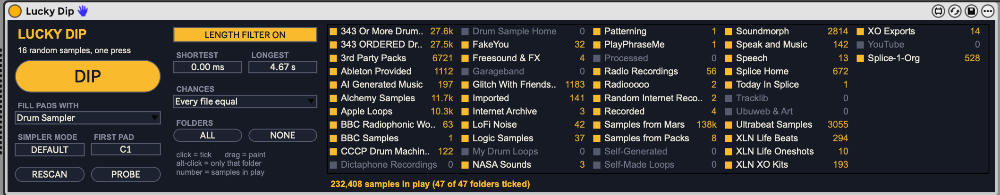

31
lucky dip
Random kit maker: one press fills 16 Drum Rack pads with samples drawn from the whole sample library.

about
Press DIP and 16 pads of a Drum Rack get random samples from Remote Samples and Splice-1-Org (320,800 files at the first scan). FILL PADS WITH chooses how. Simpler fills the pads in place, one Simpler per pad. Drum Sampler writes a Drum Rack preset called Lucky Dip Kit, made from the _Drum Sampler Drum Rack v2 template with 16 samples loaded, which you then load from the browser with a double-click. A length filter and a tickbox per top-level folder decide what is in play. MIDI passes straight through.
- type
- midi effect
- built by
- claude
- state
- v0.1
- needs
- Live 12.4 or later
- folder
- Lucky Dip Device
quick start
- 01Drop Lucky Dip on a MIDI track (User Library > Presets > MIDI Effects > Max MIDI Effect, or search the browser for it). An empty track is fine.
- 02The first time it ever runs it scans the sample folders, about 40 seconds. After that the saved index loads in a fraction of a second. Wait for the status line to show the number of samples in play.
- 03Press DIP. In Simpler mode the track gets a Drum Rack with 16 pads from C1. Press again for a new kit.
- 04For Drum Samplers: set FILL PADS WITH to
Drum Sampler, press DIP, then double-clickLucky Dip Kitin the browser with Lucky Dip's track selected. - 05Narrow it down: untick folders, or alt-click one folder to draw from that folder alone.
controls
dip
- DIPbutton
- Picks 16 samples and fills the pads (Simpler) or writes the kit preset (Drum Sampler).
- FILL PADS WITHSimpler / Drum Sampler
- Simpler: the pads are filled on the track straight away. An empty track gets a new Drum Rack; an existing Drum Rack is reused. A pad that already holds a Simpler just gets a new sample, so the rest of its chain stays; any other instrument on the pad is swapped for a Simpler. Drum Sampler: writes
Lucky Dip Kitto User Library > Presets > Instruments > Drum Rack. Double-click it, or select it and press Enter, to load it. - SIMPLER MODEDEFAULT / 1-SHOT
- Simpler mode only. DEFAULT leaves each Simpler as the default Simpler preset has it; 1-SHOT switches every loaded Simpler to 1-Shot playback.
- FIRST PADnote, default C1
- The note of the first of the 16 pads. C1 is the bottom-left pad of a new Drum Rack. Applies to both modes.
length
- LENGTH FILTERON / OFF
- On: only samples whose length is between SHORTEST and LONGEST are in play. Lengths are read from the file headers during the scan, so the filter costs nothing at DIP time.
- SHORTEST0 ms - 10 s
- Lower limit. Default 0.
- LONGEST50 ms - 120 s
- Upper limit. Default 5 s.
folders
- Folder paneltickboxes
- One box per top-level folder in Remote Samples, plus one for the whole of Splice-1-Org. The number is how many samples in that folder are in play with the current length filter. Click to tick or untick, drag to paint, alt-click to tick only that folder.
- ALL / NONEbuttons
- Tick or untick every folder.
- CHANCESEvery file equal / Every folder equal
- Every file equal draws from the whole pool, so the big folders dominate. Every folder equal picks a ticked folder first, then a file inside it, so small folders turn up as often as large ones.
housekeeping
- RESCANbutton
- Walks the sample folders again, about 12 seconds. Press it after adding samples; new files are not in play until then.
- PROBEbutton
- Writes what Live reports about this track's Drum Rack to the log. For diagnosis only.
- Status line
- The gold text under the folder panel: samples in play, scan progress, and the result of each DIP.
workflow
drum sampler kits, quickly
Leave the browser on a search for Lucky Dip Kit. Each new kit is then DIP, double-click. Loading it replaces the Drum Rack on the selected track.
keeping a kit
A kit that is on a track lives in the Set and is not changed by later DIPs. To keep one as a preset, save the rack from the track under another name, because Lucky Dip Kit is overwritten every time.
one-folder kits
Alt-click a folder (BBC Radiophonic Workshop, NASA Sounds, Radio Recordings) and every pad comes from it. Turn the length filter off for longer material.
changing the drum sampler defaults
The kit is a copy of _Drum Sampler Drum Rack v2, read fresh on every DIP and never changed. Re-save that rack under the same name with different Drum Sampler settings or effects on the pads and the next kit follows. It has 64 pads from C1; Lucky Dip fills 16 from FIRST PAD and leaves the rest empty.
adding a sample location
Add an entry to roots in ~/LuckyDip/settings.json and press RESCAN. "split": true gives every top-level folder inside it a tickbox; false makes the whole location one tickbox.
gotchas
- Needs Live 12.4 or later.
- Loading
Lucky Dip Kitreplaces the whole Drum Rack on the selected track, including anything you changed on it. Check the right track is selected before double-clicking. - Each Drum Sampler DIP overwrites
Lucky Dip Kit. Save a rack under another name to keep it as a preset. - Drum Sampler mode needs
_Drum Sampler Drum Rack v2.adgin User Library > Presets > Instruments > Drum Rack. Don't rename or move it. - Samples are used where they sit on the Crucial X9, in both modes. Use Collect All and Save if a Set needs to travel.
- A Simpler-mode DIP is many undo steps, not one.
- Simpler mode on a rack loaded from a Drum Sampler kit is slow (15 seconds for the 16 pads), because every Drum Sampler has to be swapped out.
- If Hot-Swap is on when you press DIP in Drum Sampler mode, Lucky Dip switches it off.
- Folder ticks are saved globally, not with the Set. The other controls are saved with the Set.
- Not yet tried: Push, a FIRST PAD other than C1,
Every folder equal, and running with the drive unplugged.
rebuilding
python3 build_lucky_dip.py in the device folder writes Lucky Dip.maxpat and a frozen Lucky Dip.amxd (scripts embedded at build time, no Max freeze step). Copy the .amxd over the one in User Library > Presets > MIDI Effects > Max MIDI Effect. node test_node.js and node test_lom.js are the offline tests.
Three scripts: luckydip_node.js (node.script) scans, indexes, picks and writes the kit preset; luckydip_lom.js (js) fills Simpler pads through the Live API; luckydip_ui.js (v8ui) draws the folder panel.
The index, settings and log are in ~/LuckyDip/. The log lists every kit pad by pad with full paths.
Live's API cannot load a sample into a Drum Sampler or load a preset, which is why that mode writes a preset file instead. The README in the device folder has the file-format notes.